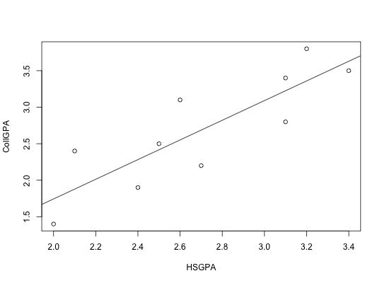

Data for Exercise 2.13
A data frame with 10 observations on the following 2 variables.
Kitchens, L. J. (2003) Basic Statistics and Data Analysis. Duxbury
str(Gpa)#> 'data.frame': 10 obs. of 2 variables: #> $ HSGPA : num 2.7 3.1 2.1 3.2 2.4 3.4 2.6 2 3.1 2.5 #> $ CollGPA: num 2.2 2.8 2.4 3.8 1.9 3.5 3.1 1.4 3.4 2.5 #>attach(Gpa) plot(HSGPA,CollGPA)model <- lm(CollGPA~HSGPA) abline(model)model#> #> Call: #> lm(formula = CollGPA ~ HSGPA) #> #> Coefficients: #> (Intercept) HSGPA #> -0.9504 1.3470 #> #>r <- resid(model) yhat <- fitted(model) Table2.1 <- cbind(HSGPA,CollGPA,yhat,r) Table2.1#> HSGPA CollGPA yhat r #> 1 2.7 2.2 2.686530 -0.48653001 #> 2 3.1 2.8 3.225329 -0.42532943 #> 3 2.1 2.4 1.878331 0.52166911 #> 4 3.2 3.8 3.360029 0.43997072 #> 5 2.4 1.9 2.282430 -0.38243045 #> 6 3.4 3.5 3.629429 -0.12942899 #> 7 2.6 3.1 2.551830 0.54816984 #> 8 2.0 1.4 1.743631 -0.34363104 #> 9 3.1 3.4 3.225329 0.17467057 #> 10 2.5 2.5 2.417130 0.08286969 #>remove(r,yhat,model,Table2.1) detach(Gpa)